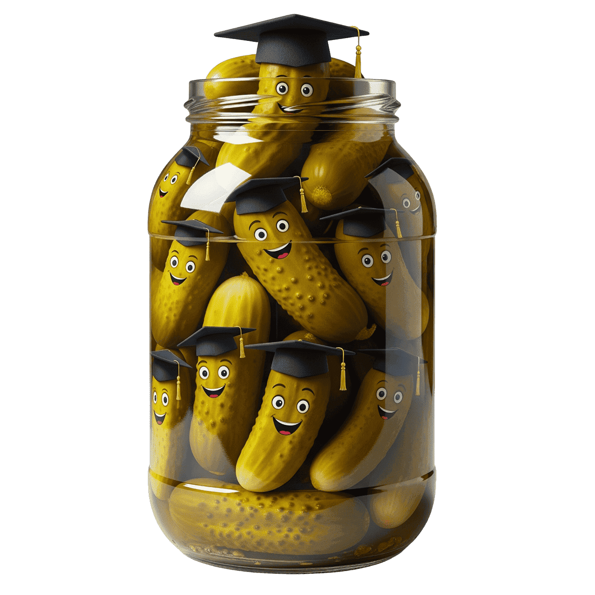

ü߆ Uitleg
“Have got” betekent hebben in het Engels en gebruik je vaak om te zeggen wat iemand bezit.
In de tegenwoordige tijd gebruik je “have got” of “has got”:
| Engels | Nederlands |
|---|---|
| I have got | Ik heb |
| You have got | Jij hebt |
| He has got | Hij heeft |
| She has got | Zij heeft |
| It has got | Hij Het heeft |
| We have got | Wij hebben |
| You have got | Jullie hebben |
| They have got | Zij hebben |
Let op: bij he, she, it gebruik je has got in plaats van have got.
✏️ Afkortingen en Zinsstructuur
In het Engels worden deze vormen vaak afgekort. Hier zie je hoe het werkt:
Bevestigend
| Volledig | Afkorting |
|---|---|
| I have got | I've got |
| You have got | You've got |
| He has got | He's got |
| She has got | She's got |
| It has got | It's got |
| We have got | We've got |
| You have got | You've got |
| They have got | They've got |
Ontkennend
| Volledig | Standaard Afkorting | Alternatieve Afkorting |
|---|---|---|
| I have not got | I haven't got | I've not got |
| You have not got | You haven't got | You've not got |
| He has not got | He hasn't got | He's not got |
| She has not got | She hasn't got | She's not got |
| It has not got | It hasn't got | It's not got |
| We have not got | We haven't got | We've not got |
| You have not got | You haven't got | You've not got |
| They have not got | They haven't got | They've not got |
Vragend
| Vraag | Vertaling |
|---|---|
| Have I got...? | Heb ik...? |
| Have you got...? | Heb jij...? / Hebben jullie...? |
| Heeft hij...? | Heeft hij...? |
| Has she got...? | Heeft zij...? |
| Has it got...? | Heeft het...? |
| Have we got...? | Hebben wij...? |
| Have they got...? | Hebben zij...? |
üÉè Flashcards
Oefen met interactieve flashcards over “have got”.
üé¨ Video-uitleg
Kijk naar deze video’s om de structuur beter te begrijpen.
Have Got – Bevestigen
Have Got – Ontkennen
üí° Pickle Jar
Test je kennis met oefeningen over “have got”! Klik op de Pickles om te starten.
